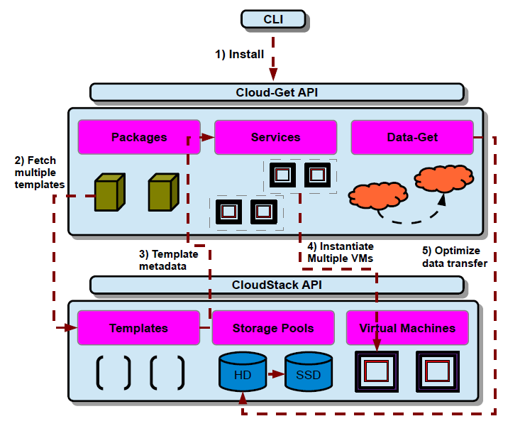

Tipos de Serviço
Infrastructure as a service (IaaS):
Esse tipo de modelo de serviço fornece recursos de infraestrutura como um serviço aos usuários finais. Esse modelo fornece aos usuários processamento, armazenamento, redes entre outros recursos necessários para rodar algum software e sistema operacional. O provedor controla e gerencia a infraestrutura da nuvem e o usuário tem controle sobre os recursos em si. O usuário pode também ter algum controle sobre os serviços de rede.
Platform as a service (PaaS):
Nesse modelo de serviço, é fornecido ao usuário final uma plataforma que utiliza a infraestrutura da nuvem. O provedor gerencia o sistema operacional, rede ou armazenamento e o usuário final tem controle sobre as aplicações e seus ambientes de hospedagem.
Software as a service (SaaS):
Esta camada oferece software como um serviço aos usuários, como um mecanismo de cálculo online. O usuário final pode acessar este software usando uma interface de cliente leve como através de um navegador web. Deve ser destacado que o usuário final não gerencia a infraestrutura da nuvem que está por baixo do software como rede, servidores ou sistema operacional.
Big Data e Cloud
Computação na nuvem tem fundamentalmente mudado o cenário de computação em larga escala. Usuários agora podem rapidamente instanciar máquinas virtuals e utilizar plataformas escaláveis para servir suas aplicações.
Cloud-Get e CloudStack:
CloudStack fornece infraestrutura como um serviço. Os variados serviços do Cloud-Get (gerenciador de serviços, repositório de pacotes e gerenciador de dados) são instanciados como um conjunto de máquinas virtuais gerenciados pelo CloudStack.
Como muitas plataformas de IaaS, CloudStack inclui muitas oportunidades de controle de recursos virtuais de baixo nível. Por exemplo, CloudStack permite máquinas virtuais alocarem espaço de armazenamento de uma variedade de pontos de armazenamento, incluindo compartilhado (
iSCI
) e local (anexado diretamente a um hospedeiro físico).

Figura: Usuários interagem com a API Cloud-Get através de ferramentas de linha de comando. Cloud-Get, em retorno, interage com com a camada de gerenciamentor subjacente da nuvem.
Usuários CloudStack
Apple:
Autodesk:
Dell:
Disney:
Globo.com:
Nokia:
Comparação entre plataformas
...